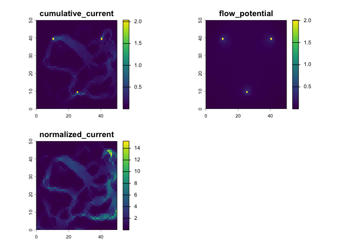
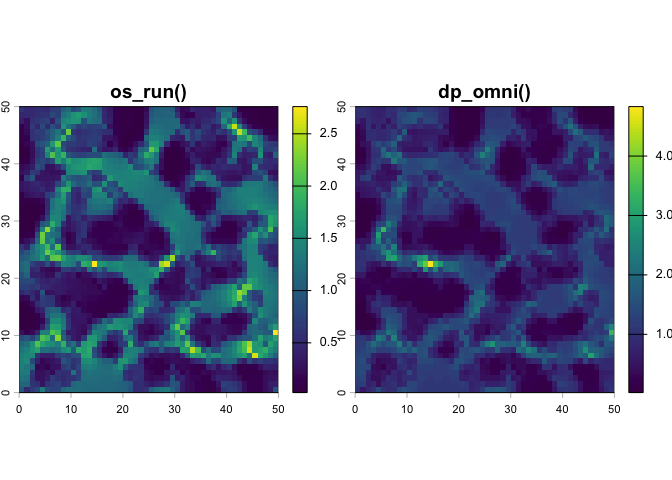

circuitscaper is circuit-theory landscape connectivity for R. You work with terra rasters in R, while Julia handles the heavy lifting under the hood. It offers two families of methods:
-
Circuitscape and Omniscape (
cs_*(),os_*()): the established tools, run through Circuitscape.jl and Omniscape.jl, with the same results as running them directly. -
Dipole methods (
dp_*(), experimental): circuitscaper’s own methods for pairwise and omnidirectional connectivity, and for connectivity between two distributions. They factor one circuit and solve many superposed source–sink pairs against it, so a map takes about 32 solves whatever the number of pairs, and each map comes with an estimate of its own noise. They compute a related but different quantity (squared rather than absolute current) and are not yet published; see the Dipole methods article.
Installation of Julia and its packages takes one line, and Julia threads speed up Omniscape and the dipole methods on large landscapes.
Note: circuitscaper is an independent R package and is not affiliated with the Circuitscape development team. Its
cs_*()andos_*()functions wrap the excellent Julia tools developed by Brad McRae, Viral Shah, Tanmay Mohapatra, Ranjan Anantharaman, and collaborators.
Installation
# 1. Install the R package from CRAN
install.packages("circuitscaper")
# or install the development version from GitHub
# remotes::install_github("matthewkling/circuitscaper")
# 2. Let the package install Julia and the necessary Julia libraries
library(circuitscaper)
cs_install_julia()
# (Or, for the dipole methods alone, just Julia)
# cs_install_julia(circuitscape = FALSE)Example
library(circuitscaper)
library(terra)
# Load an example resistance raster
resistance <- rast(system.file("extdata/resistance.tif", package = "circuitscaper"))
# Pairwise Circuitscape
# (result is a list containing the pairwise resistance matrix and current maps)
focal_sites <- matrix(c(10, 40, 40, 40, 25, 10), ncol = 2, byrow = TRUE)
result <- cs_pairwise(resistance, focal_sites)
plot(result$current_map)
# Omnidirectional connectivity across the whole landscape, with Omniscape's
# moving window and with random dipoles
# (each result is a multi-layer raster of current flow variables)
os <- os_run(resistance, radius = 10)
dp <- dp_omni(resistance, radius = 10, seed = 1)
plot(c(os$normalized_current, dp$normalized_current),
main = c("os_run()", "dp_omni()"))
Functions
Choose by the question you’re asking; where both families answer it, the getting started vignette helps choose between them.
| Question | Circuitscape and Omniscape | Dipole methods |
|---|---|---|
| How well connected are these sites, and through where? | cs_pairwise() |
dp_pairwise() |
| How does current spread from, or converge on, each site? |
cs_one_to_all(), cs_all_to_one()
|
|
| How does movement flow between a source area and a destination? | cs_advanced() |
|
| Where are the corridors and barriers across the whole landscape? | os_run() |
dp_omni() |
| How does movement link two distributions (such as seasonal ranges, or present and future habitat), and which way does it flow? |
os_run() with os_condition(future = ), for climate |
dp_flux(), dp_omni(destination = ), dp_directionality()
|
| How isolated is each place from its habitat, or from another distribution? |
cs_pairwise() resistances, for focal nodes only |
dp_isolation() |
Also:
| Function | Description |
|---|---|
os_condition() |
Define conditions for conditional Omniscape connectivity |
dp_circuit() |
Factor a circuit once, to reuse across dipole-method runs |
cs_setup() |
Initialize the Julia session and set its threads (called automatically) |
cs_install_julia() |
Install Julia and the required Julia packages |
cs_julia_available() |
Check whether Julia, Circuitscape.jl, and Omniscape.jl are installed |
Requirements
- R >= 4.0
- Julia >= 1.10 (installed automatically via
cs_install_julia()) - R packages: terra, JuliaConnectoR
Learn More
- Getting started vignette: installation, inputs and choosing a method
- Circuitscape and Omniscape: each mode and its options
- Dipole methods: using them, how they work, and how they compare
- Circuitscape user guide
- Omniscape documentation
- McRae, B.H. (2006). Isolation by resistance. Evolution, 60(8), 1551-1561.
- McRae, B.H. & Beier, P. (2007). Circuit theory predicts gene flow in plant and animal populations. PNAS, 104(50), 19885-19890.
- McRae, B.H., Dickson, B.G., Keitt, T.H. & Shah, V.B. (2008). Using circuit theory to model connectivity in ecology, evolution, and conservation. Ecology, 89(10), 2712-2724.